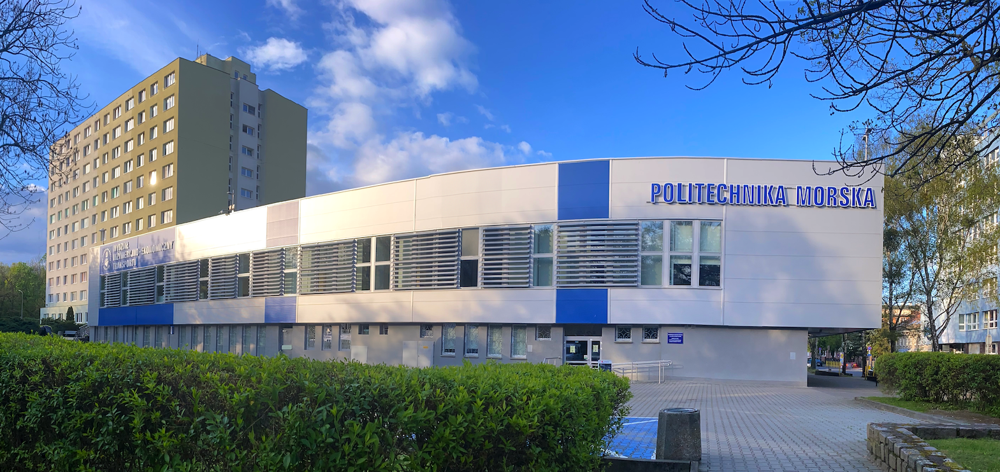

Venue and Location
EuroSciPy 2024 takes place in Szczecin, Poland from Monday, August 26th until Friday, August 30th.
Szczecin lies in the heart of Europe near the Baltic sea and German border, it is the 7th largest city in Poland with a beautiful beach and old town, see the city’s webpage.
Location
Main Venue (Conference and Tutorials)
The venue is in the city center, next to a beautiful park and riverbanks, where you can find many restaurants and cafés. It’s also within walking distance from the old town with the castle.
Address
Szczerbcowa 4, 70-503 Szczecin, Polen

How to come to Szczecin?
By Plane
Szczecin has an airport located in Goleniów, which is an hour away from the city centre and can be reached by bus or train. Szczecin Airport
However, you will find many more plane connections to Berlin, and from the airport in Berlin, you can travel with Flixbus.
By Train
Szczecin has a few train stations, so be sure to get off at Szczecin Główny, which is located by the river. PKP Szczecin Główny
By Bus
The bus station and Flixbus stop are located close to the train station. PKS Szczecin Flixbus
To get to the venue from the bus or train station, you can take buses 75 and B or trams 1, 3, and 6. You can also walk along the river, which will take about 25 minutes.
How to get around in Szczecin?
Szczecin has many trams and buses that will take you to any part of the city. The best way to buy public transportation tickets is to install the Mobilet app on your phone. Mobilet
We recommend buying either a daily ticket or a 5-day ticket. ZDiTM Szczecin
Hotels
The venue is located in the city centre, so you will have many options for accommodation. Here are some of our recommendations:
Restaurant, Café, Bar
If you’re looking for food or want to have a drink, there are a few locations you can visit with many choices to offer.
First, and most popular among locals, is Deptak Bogusława X
Another good choice is to go to the old town, where you can not only eat but also visit the castle. Old Town
If the weather is nice, a great idea is to go for a walk along the river, where you can also find restaurants and cafes, all with tables outside, where you can enjoy the view.
Here are some more specific recommendations:
Restaurants
- Tajska
- Paprykarz Fish Market
- Karczma Polska
- Chief by The Kitchen
- Zakotwiczony oysters&more
- ORRO Restauracja & Bar
- u Kelnerów
- Gospoda Zbójnicka
- Brasileirinho Brazylijska Kuchnia & Bar
- HOSPUDKA Czeska Restauracja Szczecin
Pizza
Burgers
Sushi
Indian
Vegan/Vegetarian
Coffee
- Fanaberia Republika Rozmaitości
- Kardamon - coffee & bakery
- Kawiarnia Zaciszna
- Bonjour french bistro
- Przystań - Kawa i Wino
- Eccolo - Kawiarnia & lodziarnia
- Bananowa Szklarnia
Ice cream
Breakfast
Activities
Szczecin is surrounded by lakes, some of which can be reached from the city centre within 30 minutes. If you want to go paddleboarding, kayaking, or just spend some time in nature, we recommend taking trams 9, 10, or 3 and visiting Głębokie. Other options are Dąbie and Arkonka. Głębokie
Other interesting places to visit are the Maritime Science Center Maritime Science Center and the Pomeranian Dukes’ Castle from the year 1346 Pomeranian Dukes’ Castle